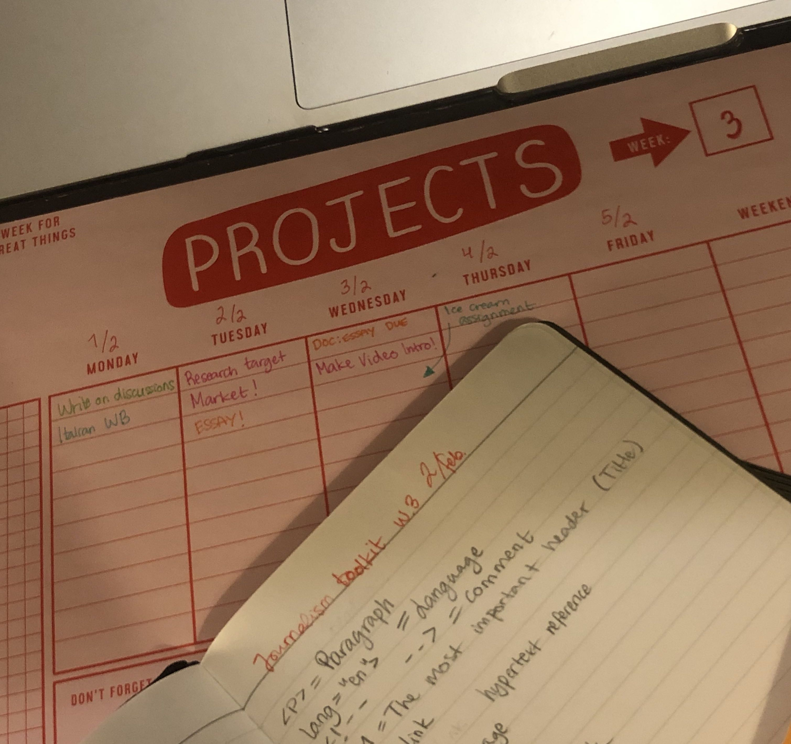

Hey, here's a link to one of my favorite songs 💕💖💗 Frank Ocean - Thinking Bout You
Here is a link to the back-end code for this webpage
Take a look at my poster!
Hi! My name is Wara, I'm half Bolivian and Swedish and I live in Stockholm at the moment, I'm a Fashion Marketing grad at Parsons and this is my last semester and I can't wait to graduate and hopefully move to Italy! Besides fashion I like dancing and enjoy listening to neo-soul, reggaeton, cumbia and afro-beats.
Life in Stockholm is pretty nice but I miss living in New York, I love the energy and the diversity of the city!